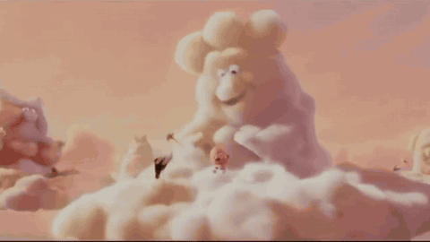
Облака лепят
Из пара и фантазии появляются котята, ягнята и даже крокодильчики.
Фан-сайт о короткометражке Pixar, где облака лепят малышей, а аисты несут их домой.
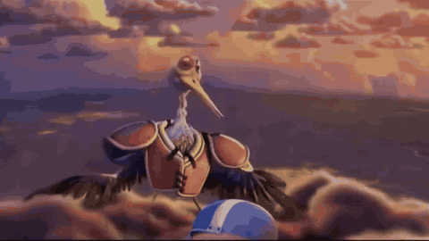
Шесть минут без единого слова: вся история рассказана картинкой и музыкой.

Из пара и фантазии появляются котята, ягнята и даже крокодильчики.
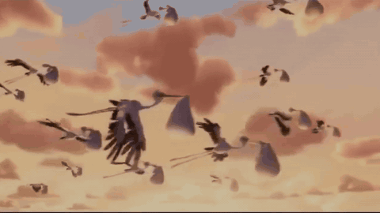
Каждый малыш находит дом, если у него есть надёжный курьер.
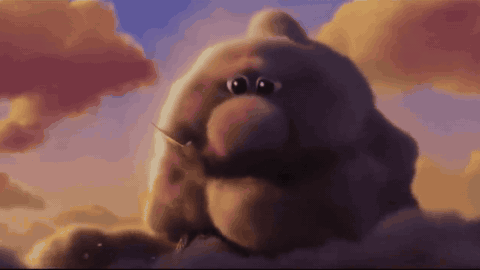
Грустное серое облако, у которого малыши выходят с зубами и колючками.
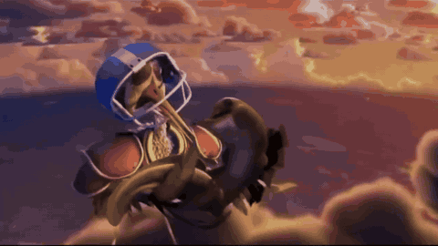
Аист в шлеме и доспехах, который каждый раз возвращается за новой партией.
Листайте вбок.
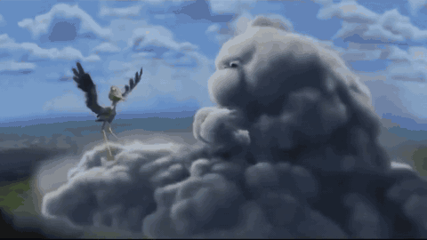
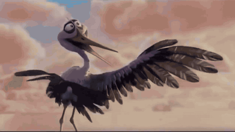
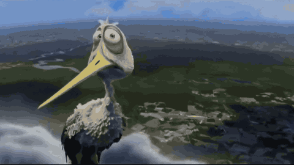
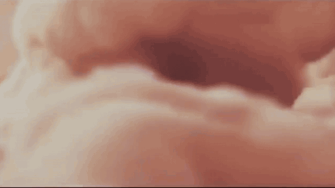
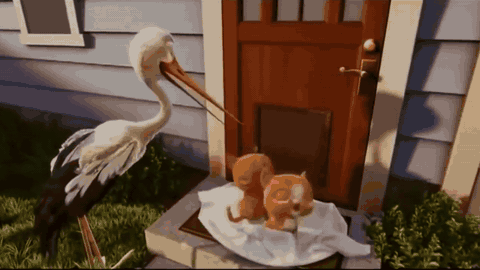
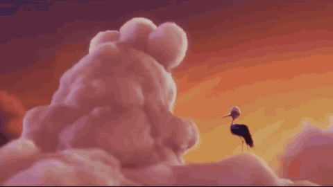
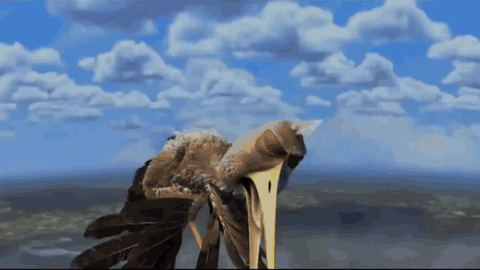
Шесть минут без единого слова, а улыбаться и грустить успеваешь по нескольку раз. Pixar рассказывает простую историю о дружбе: облако Гас лепит «трудных» малышей, а аист Пек не бросает его, хотя каждый раз возвращается с синяками.
Лучше всего здесь работают мелочи: грустные глаза Гаса, шлем и доспехи Пека, закатное небо, в котором хочется остаться. Мультфильм напоминает, что настоящий друг тот, кто прилетает за следующей посылкой. Он лёгкий, тёплый, и после него хочется кому-нибудь позвонить.
Отзыв на «Переменную облачность»
Впишите любое название, и оно сразу появится в шапке, заголовке, бегущей строке и подвале.